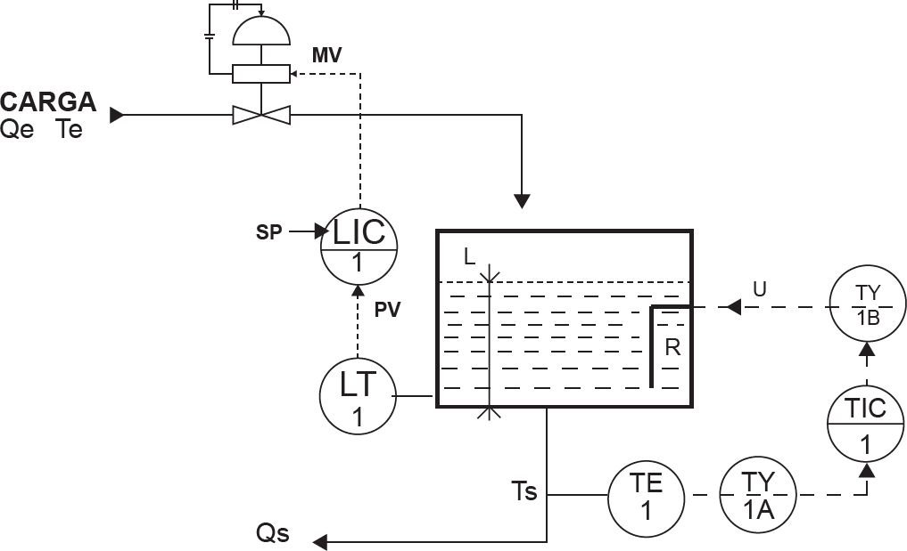

Um engenheiro de controle e automação, responsável por gerenciar a instalação de um sistema de controle de um reservatório de água quente de um hospital, deve assessorar a equipe encarregada de sua montagem. A malha de controle do tanque de aquecimento está representada na figura abaixo.
Disponível em: http://www.dequi.eel.usp.br/. Acesso em: 16 jul. 2014.
Com base na análise do diagrama de instrumentação e controle, escolha a opção em que as variáveis manipuladas (MV) e as variáveis de processo (PV) estão corretamente relacionadas na forma MV / PV para uma mesma malha de controle.